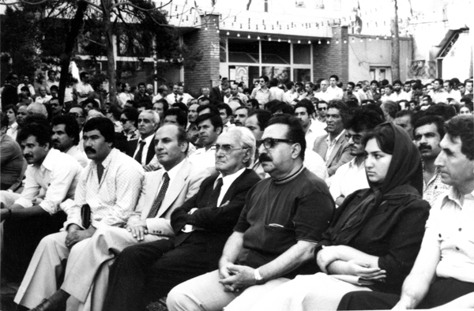

National Front Gets Active Again
During and after the 1979 revolution in Iran, National Front started to act again. Asghar parsa was one of the main figures of this new period. Being a member of the National Front Concil, he also assumed the role of the Publisher of the main National Front monthly newspaper.

This is a picture a 1979 gathering at the National Front club in
Tehran. Asghar Parsa is sitting next to Dr. Karim Sanjabi and Dr. Ahmad
Madani.
Shortly after this picture, the National Front club was raided by fundamentalist elements and NF leaders were forced to go into hiding. Asghar Parsa lived for more than a year in hiding, before he was arrested in 1983.